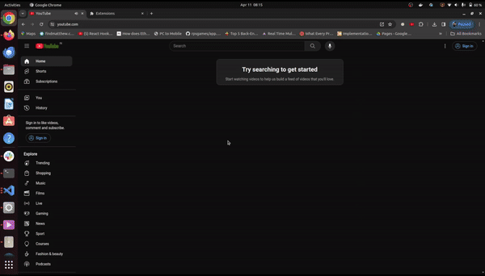

Description
The YouTube Skipper Chrome Extension is a handy tool designed to enhance your YouTube viewing experience by automatically skipping skippable ads. Say goodbye to those pesky ads that interrupt your videos, and enjoy uninterrupted content seamlessly.

On the left: Ad running in the video
On the right: Extension installed and the ad getting skipped automatically
Features
- Automatically skips skippable ads on YouTube videos.
- Can skip multiple ads.
- Works seamlessly in the background, providing a smooth viewing experience.
- Lightweight and easy to use.
- Skips yt survey.
Installation
- Clone the extension repository or download it.
- Open Chrome and navigate to
chrome://extensions/. - Enable Developer Mode by toggling the switch in the upper-right corner.
- Click on the "Load unpacked" button located at the top-left corner of the extensions page.
- Select the directory where you cloned or downloaded the extension repository.
- Confirm the installation when prompted.
Extension in action
You can see the ad getting skipped in less than 100 milliseconds
How to Run Locally
- Clone the Repository:
git clone https://github.com/dikshantrajput/skip-yt-ad - Run the server:
npm run dev - Make any change and just save. Your extension should refresh.
- Build the project:
npm run build
Usage
- Once installed, the extension will automatically start working whenever you watch a YouTube video with a skippable ad.
- Sit back and enjoy your uninterrupted YouTube experience as the extension takes care of skipping the ads for you.
Compatibility
This extension is compatible with Google Chrome and Chromium-based browsers.
Contributing
Contributions from the community are welcomed. If you'd like to contribute to the development of this extension, please fork the repository, make your changes, and submit a pull request. If you found any issue, please raise an issue.
Disclaimer
This extension is not endorsed by or affiliated with YouTube. It is an independent project developed solely for the purpose of improving user experience on the platform.